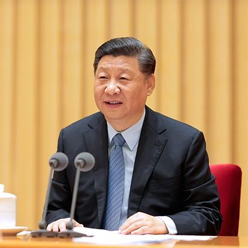

网站简介
本网站认为，要厘清今天中美关系的本质，我们需要把视角放得更久远一些，将今天的国际现实放在人类文明演进历史的坐标上。
中国今天独特的政治文化在历史长河中是如何产生的，与西方有何不同？现代化如何在西方出现并席卷全球？今天的国际环境是如何形成的，美国在中间扮演何种角色，对其他国家拥有怎样的影响力、支配权？美国的硬实力有哪些，对今天国际秩序，尤其是经济体系有哪些决定权？中国是如何利用现有的国际秩序在过去四十年实现了历史性的起飞，今天遇到了怎样的问题？面对今天美国的压力，中国以后有哪些选择的空间，又要避免哪些陷阱，和美国应该形成怎样的关系才能实现自身利益最大化，并最终实现现代化？系统地回答上述问题，能够帮助我们看清中国的未来。
中美历史时间线
中华人民共和国成立
1949年
第一个五年计划开始
1953年-1957年
三大改造
1953年-1956年
中华人民共和国宪法诞生
1954年
尼克松访华
1972年
改革开放
1978年
中美正式建交
1979年
加入亚太经合组织
1991年
香港回归
1997年
澳门回归
1999年
加入世贸组织
2001年
北京奥运会
2008年
中美贸易战
2018年-2020年
美国、加拿大和14个西欧国家在华盛顿签署一项公约，建立北大西洋公约组织
1949年
美国与英国、法国、新西兰、澳大利亚、菲律宾、泰国和巴基斯坦建立东南亚条约组织
1954年
肯尼迪总统在得克萨斯州达拉斯市遇刺身亡
1963年
“阿波罗”11号飞船登月成功，人类首次踏上月球
1969年
美国总统尼克松抵达北京，对中国进行为期8天的访问，与中国领导人举行会谈。访问结束时，中美签署上海公报
1972年
福特总统访问中国，并与毛泽东主席及邓小平副总理会谈
1975年
美国与中华人民共和国建立全面外交关系
1979年
中美贸易战
2018年-2020年
中美基本情况对比
中国与美国作为世界两大经济体，对全球经济的影响都很大。而中美之间的贸易战自然牵动着世界人民的心。自打双方发动贸易战争以来，全球的经济都受到了一定影响，美国作为全球第一大经济体，中国飞速的发展势必会影响到它，作为一个霸权主义国家，美国的做法也有理可循。
中美GDP与人均GDP比对
美国的GDP与人均GDP均呈上升趋势，且差别不大。中国的GDP上升幅度很大，但是人均GDP却上升很小，与国家GDP拉开了很大的距离
中美人口增长对比
两个国家的人口都是慢幅增长，呈正增长。两国人口增长率都在下降，不同的是，美国人口下降率并不平稳，波动较大，而中国则平稳下降，这与政策也有很大关系。
两国出口情况
中美双方在出口方面都将对方排进了前三，毫无疑问对方是自己很大的商品出口方向。经济全球化趋势下，中美双方经济交往密切。作为全球的第一和第二大经济体，中美双方进行贸易战争影响势必巨大。
中美贸易战发展
从各个阶段的时间对应关系上面，可以看出中方为了维护自身正当权益和全球自由贸易秩序，不得不同步进行反制。从500亿美元到1000亿美元再到2000亿美元进一步对华加征关税，贸易局势紧张。
（注：301调查是美国依据301条款进行的调查，301条款是指《1988年综合贸易与竞争法》第1301－1310节的全部内容，其主要含义是保护美国在国际贸易中的权利，对其他被认为贸易做法“不合理”、“不公平”的国家进行报复。根据这项条款，美国可以对它认为是“不公平”的其他国家的贸易做法进行调查，并可与有关国家政府协商，最后由总统决定采取提高关税、限制进口、停止有关协定等报复措施。）
中美领导人在任时间
毛泽东
任期：
1949年9月-1959年4月
(1989年-1976年）
刘少奇
任期：
1959年4月-1966年
（1898年-1969年）
李先念
任期：
1983年6月-1988年4月
（1909年-1992年）
杨尚昆
任期：
1988年4月-1993年3月
(1907年-1998年)
江泽民
任期：
1993年3月-2003年3月
（1926年-今）
胡锦涛
任期：
2003年-2013年3月
（1942年-今）

习近平
任期：
2003年3月-今
（1953年-今）
哈里·S·杜鲁门
任期：
1945年4月-1953年1月
（1834年-1972年）
德怀特·戴维·艾森豪威尔
任期：
1953年1月-1961年1月
（1890年-1969年）
约翰·肯尼迪
任期：
1961年1月-1963年11月
（1917年-1963年）
林登·约翰逊
任期：
1963年1月-1969年11月
（1908年-1973年）
理查德·尼克松
任期：
1969年1月-1974年8月
（1913年-1994年）
杰拉尔德·福特
任期：
1974年8月-1977年1月
（1913年-2006年）
吉米·卡特
任期：
1977年1月-1981年1月
（1924年-今）
罗纳德·里根
任期：
1981年-1989年
（1911年-2004年）
乔治·赫伯特·沃克·布什
任期：
1989年1月-1993年1月
（1924年-2018年）
比尔·克林顿
任期：
1993年1月-2003年1月
（1946年-今）
乔治·沃克·布什
任期：
2001年1月-2009年1月
（1946年-今）
贝拉克·奥巴马
任期：
2009年1月-2017年1月
（1961年-今）
唐纳德·特朗普
任期：
2017年1月-今
（1946年-今）